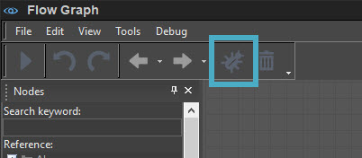
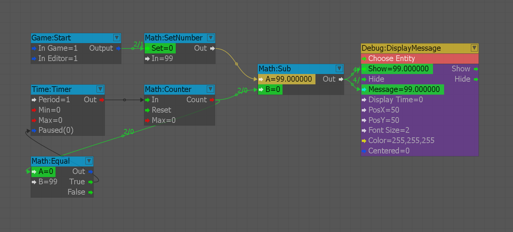
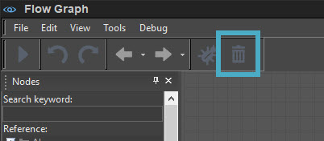

При создании графов потоков вы можете обнаружить, что определенные вещи теперь срабатывают и что в целом ваш график либо ведет себя неожиданным образом, либо полностью сломан. Чтобы исправить эту ситуацию, у нас есть инструмент под названием «Отладчик», который мы можем использовать, чтобы визуально понять порядок выполнения и поток нашего графа. При построении графиков в редакторе вы будете постоянно использовать отладчик, чтобы убедиться, что ваши данные доходят до конца ваших цепочек.
Использование отладчика
Выполните следующие шаги, чтобы выполнить отладку из нашего графика обратного отсчета:
- Включите отладчик в интерфейсе Flow Graph, нажав кнопку Ошибка значок в верхнем левом меню. После этого перейдите в игровой режим (Ctrl+Г), чтобы активировать визуальную отладку на графике.
- Разным соединениям теперь будут присвоены цвета, соответствующие срабатыванию узла и количеству его срабатываний. По умолчанию черные разъемы теперь меняют цвет на зеленый при срабатывании, а значения выделяются желтым цветом. Числовые значения между узлами показывают, сколько раз выходной сигнал попадал во входной порт. По умолчанию левое значение почти всегда будет единственным, значение которого увеличивается.
- Чтобы удалить отладочную информацию с графика, вам необходимо выйти из игрового режима и нажать кнопку мусор значок.
Шаг 1

Шаг 2

Шаг 3
